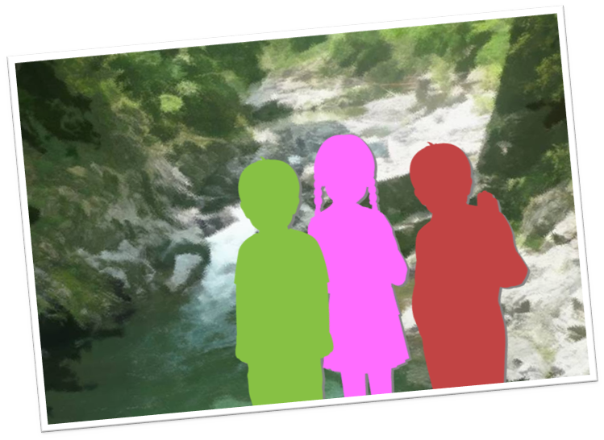
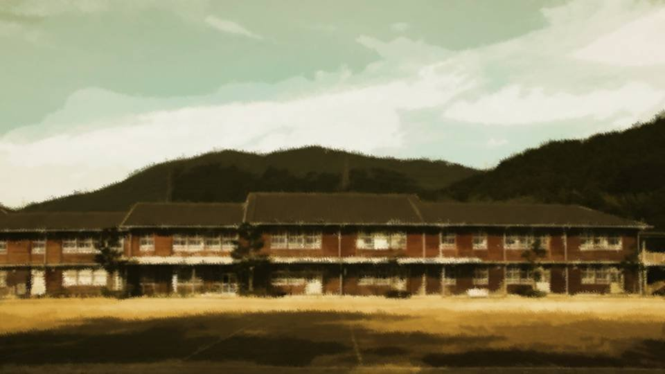
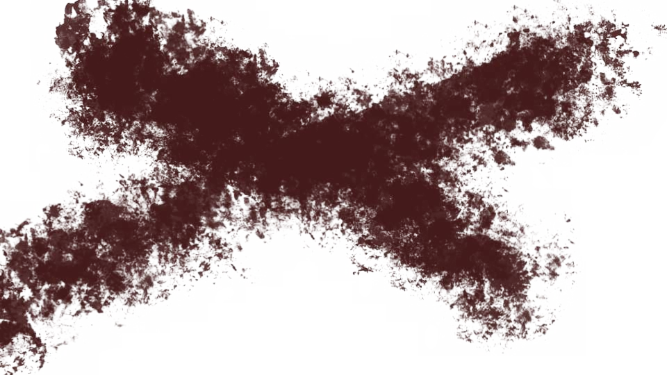
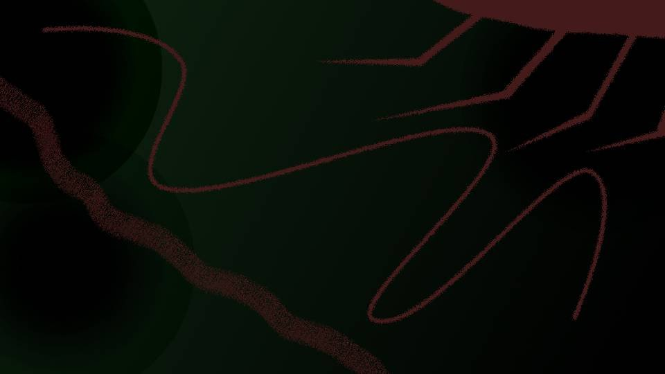

This scene is not unlocked yet in your progress
Servile Self-Love

Me and my brother, and then Sakura.
We were all the same age, and the three of us were always running around the hills and fields together.
My brother, smart and a natural leader, and Sakura, kind, like a goddess.
I was truly fortunate.
With a brother and a childhood friend like them, mine was the happiest boyhood there could be.
We were all the same age, and the three of us were always running around the hills and fields together.
My brother, smart and a natural leader, and Sakura, kind, like a goddess.
I was truly fortunate.
With a brother and a childhood friend like them, mine was the happiest boyhood there could be.
But when did it start?
This feeling that I didn't measure up to these two.
Whenever I was in trouble, my brother always helped me.
Whenever I was in trouble, Sakura always helped me.
This feeling that I didn't measure up to these two.
Whenever I was in trouble, my brother always helped me.
Whenever I was in trouble, Sakura always helped me.
When the two of them were in trouble, what could I do?
As my heart changed from a child's to an adult's, the way I thought about the two of them had begun to change too.
What I could do... what was it?
As my heart changed from a child's to an adult's, the way I thought about the two of them had begun to change too.
What I could do... what was it?
It was around my second year of middle school that I started asking that question in earnest.

Sakura began to be bullied at school because of her looks.
Supposedly the trigger was a delinquent upperclassman making passes at Sakura, and the girls who hung around him, jealous of it, were the ones who started it.
Supposedly the trigger was a delinquent upperclassman making passes at Sakura, and the girls who hung around him, jealous of it, were the ones who started it.
Young people today probably don't know this, but back in the day, being a delinquent meant things like riding motorbikes through the school building and going around smashing every window in the school.
Our area in particular was the countryside, so that breed of so-called country delinquent was still around.
Our area in particular was the countryside, so that breed of so-called country delinquent was still around.

The bullying of Sakura was terrible.

Dousing Sakura's skin with murky brown industrial oil, pressing lit cigarettes against her legs.

The worst was when they carried her off on a motorbike, tied her up, and left her in the mountains in the summer.
And when they did, they smeared honey all over her body.
And when they did, they smeared honey all over her body.

Then the mountain insects, drawn by the honey, crawled all over Sakura's body.
Grotesque insects, so strange you couldn't tell what family they belonged to, crawled over Sakura's body all day.
Grotesque insects, so strange you couldn't tell what family they belonged to, crawled over Sakura's body all day.
This was no longer anything you could call bullying. It was plain crime.
They tormented Sakura in body and mind in every way they could.
They tormented Sakura in body and mind in every way they could.
How do I know all this?
Because I was a witness to the bullying.
Why was I a witness?
Because those guys went out of their way to bring me along and make me watch Sakura suffer.
Because I was a witness to the bullying.
Why was I a witness?
Because those guys went out of their way to bring me along and make me watch Sakura suffer.
Unlike my brother, I was timid and servile.
I had no idea how to get Sakura out of it.
Those guys knew about that weakness inside me.
I had no idea how to get Sakura out of it.
Those guys knew about that weakness inside me.
If I told anyone about the bullying, the same thing would happen to me...
So I couldn't tell anyone.
Coming from me, her childhood friend, the words 'there was no bullying' would be what the adults trusted more than anything.
It was testimony that held up only because Sakura and I trusted each other― by making me a witness, they made sure I could never testify about the bullying.
So I couldn't tell anyone.
Coming from me, her childhood friend, the words 'there was no bullying' would be what the adults trusted more than anything.
It was testimony that held up only because Sakura and I trusted each other― by making me a witness, they made sure I could never testify about the bullying.
But my brother was different.
My brother saw through bullying like that in no time.
And thinking of me as well, he didn't go to the adults either.
My brother saw through bullying like that in no time.
And thinking of me as well, he didn't go to the adults either.
My brother got in with the gang himself, scheming to see if he could make it collapse from the inside.
My brother was trying to do what my brother could do.
My brother was trying to do what my brother could do.
I was so frustrated.
I was frustrated with myself for being unable to do anything.
Sakura was always telling me.
I was frustrated with myself for being unable to do anything.
Sakura was always telling me.
"I'm sorry, Eiichiro..." she'd say.
I could never answer Sakura's words with anything.
Saying 'sorry' myself―saying 'are you okay?'―
I couldn't give back a single one.
I could never answer Sakura's words with anything.
Saying 'sorry' myself―saying 'are you okay?'―
I couldn't give back a single one.

The adults of Arata had noticed this bullying of Sakura too.
But if the adults knew about it, those guys might think I'd been the one who talked.
That was probably why. Sakura told the adults not to interfere in any way.
It was her problem, so she would solve it herself, she said.
But if the adults knew about it, those guys might think I'd been the one who talked.
That was probably why. Sakura told the adults not to interfere in any way.
It was her problem, so she would solve it herself, she said.
Solve it herself?
What is she talking about? All she's doing is taking the violence however they hand it out and waiting quietly for it to end...!
And on top of that, I'm supposed to keep watching while Sakura gets treated like that!?
What is she talking about? All she's doing is taking the violence however they hand it out and waiting quietly for it to end...!
And on top of that, I'm supposed to keep watching while Sakura gets treated like that!?
Besides, the way things are now, it's my fault that Sakura is being bullied!
Because if I try to help Sakura, I'll become the target of the bullying...
So I kept quiet.
I was aware of the reality that this was exactly what was fueling the bullying of Sakura.
Because if I try to help Sakura, I'll become the target of the bullying...
So I kept quiet.
I was aware of the reality that this was exactly what was fueling the bullying of Sakura.
There was no one I could rely on.
I couldn't trust myself.
My brother was someone I could rely on, but my brother, for his part, seemed to be plotting something to help Sakura.
I couldn't get in my brother's way for the sake of someone like me.
I couldn't trust myself.
My brother was someone I could rely on, but my brother, for his part, seemed to be plotting something to help Sakura.
I couldn't get in my brother's way for the sake of someone like me.
But from a certain day on, most of the gang stopped coming to school.
Word was that some infighting had turned into a criminal case and they'd been sent to juvenile detention.
And the one who had lit that spark was none other than my brother.
My brother had wiped out the gang in spectacular fashion.
Word was that some infighting had turned into a criminal case and they'd been sent to juvenile detention.
And the one who had lit that spark was none other than my brother.
My brother had wiped out the gang in spectacular fashion.
"Hey, what's up? Long face, and it's spring."


"Kotaro..."
We sat on the veranda, our identical faces side by side.
Same face, same build, and yet what went on inside our heads was completely different.
We sat on the veranda, our identical faces side by side.
Same face, same build, and yet what went on inside our heads was completely different.
"No, just thinking about something.
Sakura's problem is settled, so I've been feeling easier lately too. That's my brother for you."
"About that, though..."
"?"
"About that, though..."
"?"

"You know the Lion Cats?"
"Um... that gang from the next city over, right? Supposedly they've got ties to the yakuza."
"Their boss fell for Sakura and dumped his girlfriend, word is. And here I thought things had worked out with the guys at our school..."
"Then that girlfriend he dumped..."
"Um... that gang from the next city over, right? Supposedly they've got ties to the yakuza."
"Their boss fell for Sakura and dumped his girlfriend, word is. And here I thought things had worked out with the guys at our school..."
"Then that girlfriend he dumped..."
"If this keeps up, things could get bad.
That girlfriend might sic a girls' biker gang on Sakura."
The ones who'd been bullying Sakura until recently were, when you got down to it, nothing more than our local country hoodlums.
But the Lion Cats were in a whole other league from them, in notoriety and in sheer viciousness.
If she caught the eye of someone connected to people like that―
The ones who'd been bullying Sakura until recently were, when you got down to it, nothing more than our local country hoodlums.
But the Lion Cats were in a whole other league from them, in notoriety and in sheer viciousness.
If she caught the eye of someone connected to people like that―

"I'll do what only I can do.
Eiichiro, you do what only you can do."
"Kotaro... what can I do...?"
"Just you being by Sakura's side should be enough to put her at ease."
"Me...?"
"Kotaro... what can I do...?"
"Just you being by Sakura's side should be enough to put her at ease."
"Me...?"
"You haven't noticed?"
"............?"
"Well... fine. This is between you and Sakura. Not my place to butt in."
"............?"
"Well... fine. This is between you and Sakura. Not my place to butt in."
My brother said that and walked away.
What had my brother been trying to say?
Just me being with Sakura...?
No, it couldn't be...
Sakura... feels that way about me...?
What had my brother been trying to say?
Just me being with Sakura...?
No, it couldn't be...
Sakura... feels that way about me...?
That can't be. Someone useless like me, there's no way...
Never mind dreams like that. What matters is how to protect Sakura.
Before things get out of hand, this time I have to do something about it.
Never mind dreams like that. What matters is how to protect Sakura.
Before things get out of hand, this time I have to do something about it.
So that this time I really can protect Sakura, I have to be of use too.
If I could be useful, then Sakura―
There I go again... what am I thinking?
If I could be useful, then Sakura―
There I go again... what am I thinking?
It was a few days after that, in the spring I started my third year of middle school, that an idea came to me.

 video: 桜.wmv
video: 桜.wmvThe Niimura main house's cherry, the one tree left in this land.
This little settlement had gone on for 800 years without ever being ruled by anyone.
This little settlement had gone on for 800 years without ever being ruled by anyone.
video: 桜.wmvWasn't that, maybe, a miracle?
Or had there been some wisdom that worked that miracle?
Wasn't there something, even now, that kept handing that wisdom down?
Or had there been some wisdom that worked that miracle?
Wasn't there something, even now, that kept handing that wisdom down?
video: 桜.wmvMight there be something in the storehouse's books?
Something that could become the wisdom to help Sakura...
Something that could become the wisdom to help Sakura...
video: 桜.wmvIn the Arata settlement, customs from overseas survive, deeply rooted.
And not just customs. The color of Sakura's eyes and hair tells the same story.
Even now, as a throwback, a child with a foreigner's looks is born from time to time.
And not just customs. The color of Sakura's eyes and hair tells the same story.
Even now, as a throwback, a child with a foreigner's looks is born from time to time.
video: 桜.wmvI've heard that the existence of gods, devils, witches, and shinigami was passed on at that time too, by the Westerners.
But there was something else that had been passed on.
But there was something else that had been passed on.
Before spring break was over, I pored through the storehouse's books with a dictionary of classical Japanese in hand, trying to find the wisdom to help Sakura.
There had to be... there absolutely had to be something...!
There had to be... there absolutely had to be something...!

About 500 years ago, a Westerner named Sele and others, about 20 in all, reached the Arata settlement.
The Westerners, who had begun to fit in at the Arata settlement of that time, wondered whether they could bring eternal peace to this land―
That was what they began searching for.
All to make this Arata settlement a true paradise.
The Westerners, who had begun to fit in at the Arata settlement of that time, wondered whether they could bring eternal peace to this land―
That was what they began searching for.
All to make this Arata settlement a true paradise.

This Arata settlement is blessed with fertile soil like nowhere else, and its animals and plants all grow large, many of them unusual.
The cherry that takes root only in the Arata settlement is one of them.
Sele, who had changed his name to Ginosuke Niimura, made a certain drug from that cherry's roots.
The cherry that takes root only in the Arata settlement is one of them.
Sele, who had changed his name to Ginosuke Niimura, made a certain drug from that cherry's roots.
But there was no occasion to test just how effective it was.
He had tried it on one or two people, but there was no point unless he experimented on a large number.
Sele tried to test its effects by using a certain daimyo.
He had tried it on one or two people, but there was no point unless he experimented on a large number.
Sele tried to test its effects by using a certain daimyo.

 video: 雨1.wmv
video: 雨1.wmvIn Shiyo 310, Motoyoshi Magawa, a warlord of the most illustrious of houses, was struck down by a certain minor daimyo.
The news delighted the people of the Arata settlement.
The drug's effects had been proven.
Historians of later ages are still studying, even today, how the minor daimyo struck down Motoyoshi Magawa.
The news delighted the people of the Arata settlement.
The drug's effects had been proven.
Historians of later ages are still studying, even today, how the minor daimyo struck down Motoyoshi Magawa.
But the age passed to the Ouda, the Fuji, and then the Togawa, and in time the drug vanished from history for a while.
The reason is uncertain, but wasn't using the drug too heavy a price, even for winning the realm?
The reason is uncertain, but wasn't using the drug too heavy a price, even for winning the realm?
But then an incident occurred that drew attention to the drug once more.
At that time, there was a religious group called the Holy Cerejeira Church around Megasawa City.
They were apparently an offshoot that had split off from the Arata settlement several hundred years ago.
In order to study Droga, their sacred implement, scientifically, they negotiated with Arata and had the cherries it was made from supplied to them.
They were apparently an offshoot that had split off from the Arata settlement several hundred years ago.
In order to study Droga, their sacred implement, scientifically, they negotiated with Arata and had the cherries it was made from supplied to them.
One cherry tree was still left.
If I succeeded in making this drug, then I...
It's all for Sakura. I want to help Sakura.
If I succeeded in making this drug, then I...
It's all for Sakura. I want to help Sakura.
The method didn't seem all that difficult.
All you had to do was keep boiling the roots of the cherry tree in water, then evaporate the liquid you separated out of the broth.
It took time and effort, but it could be made by a suspiciously simple process.
All you had to do was keep boiling the roots of the cherry tree in water, then evaporate the liquid you separated out of the broth.
It took time and effort, but it could be made by a suspiciously simple process.
As the finishing touch, I decided to show Sakura its effects.

―Sakura's face was clouded.
Days of never knowing when that gang would show up.
Days of never knowing when that gang would show up.
Looking back, it would have been fine to turn to the settlement's adults.
Unlike before, it wasn't a matter of me becoming the target of the bullying.
But I had ruled that option out from the start.
If I could save Sakura, I could be a hero.
Unlike before, it wasn't a matter of me becoming the target of the bullying.
But I had ruled that option out from the start.
If I could save Sakura, I could be a hero.
It's a pathetic thing to admit, but I think that, back then, somewhere in my heart, there was that kind of elation.
"Sakura, there's something I want you to see today.
With this, I can help you."
"Help... what do you mean?"
"No more worrying about you getting bullied. I've come up with a way to protect you!"
"But... but Kotaro's been helping me, so it's all right now, okay?"
"Help... what do you mean?"
"No more worrying about you getting bullied. I've come up with a way to protect you!"
"But... but Kotaro's been helping me, so it's all right now, okay?"
"But the Lion Cats have their eye on you, right!?"
"That's..."
Sakura's face was as gloomy as ever.
So I wasn't someone she could rely on, after all?
"That's..."
Sakura's face was as gloomy as ever.
So I wasn't someone she could rely on, after all?
"Hey, Eiichiro...
What if...
just what if, okay?
I...
disappeared tomorrow...
what would you do?"
"If you disappeared... then I'd search for you even if it took me to the other side of the earth!"
"If you disappeared... then I'd search for you even if it took me to the other side of the earth!"
"Thank you, Eiichiro. Just hearing that makes me happy...
So you don't have to do anything reckless for my sake..."
It was as if she could see right through me and knew I was about to 'do something reckless.'
It was as if she could see right through me and knew I was about to 'do something reckless.'
"Sakura, it's nothing reckless. I looked into everything properly."
"I'll be all right as long as you're with me, okay?
If I ran away from here...
would you come with me?"
"Huh?"
"Huh?"
"No, never mind..."
Amid her gloomy expression, Sakura's eyes were shining, just a little.
That look of hers almost seemed like feelings for me―
Amid her gloomy expression, Sakura's eyes were shining, just a little.
That look of hers almost seemed like feelings for me―
No, what am I thinking...!
Me, with nothing going for me, like a cheap knockoff of my brother... Sakura...
She probably thinks of me as a friend, but anything more than that...
And then―
Me, with nothing going for me, like a cheap knockoff of my brother... Sakura...
She probably thinks of me as a friend, but anything more than that...
And then―
"Please... don't do anything reckless for my sake.
There are plenty of ways out."
Sakura took my hand.
Sakura's hot palm, faintly damp with sweat, clung tight to my hand.
Did Sakura really have feelings for me...?
No... no, no!
A failure like me...!
Sakura took my hand.
Sakura's hot palm, faintly damp with sweat, clung tight to my hand.
Did Sakura really have feelings for me...?
No... no, no!
A failure like me...!
"Sakura, it's okay. Everything's already set."
As if to cancel out Sakura's feelings―
no, as if to drive off the illusion that they were feelings, I shook off both Sakura's urging and Sakura's hand.
Even if she did have feelings for me, what I needed was confidence.
To have the confidence to accept Sakura, I had to be the one who saved Sakura.
Even if she did have feelings for me, what I needed was confidence.
To have the confidence to accept Sakura, I had to be the one who saved Sakura.
Looking at myself from above: under a servile skin, my pride runs very high, and my self-love is strong.
Because my self-love is so strong, I know my own flaws all too well, yet refuse to truly admit them.
Because I'm about to do something as outrageous as using a drug.
Because my self-love is so strong, I know my own flaws all too well, yet refuse to truly admit them.
Because I'm about to do something as outrageous as using a drug.
Am I using the drug to satisfy my self-love and pride?
Is this... really something I'm doing for Sakura?
Is this... really something I'm doing for Sakura?
If I hadn't met Sakura today, I might have stopped myself from using Droga here.
But if Droga can save Sakura― then couldn't I become someone who can accept Sakura?
At first I thought of it as killing two birds with one stone, but my purpose keeps shifting.
What started as helping Sakura is turning into satisfying my own pride and self-love, and taking in Sakura's feelings with my whole being.
But if Droga can save Sakura― then couldn't I become someone who can accept Sakura?
At first I thought of it as killing two birds with one stone, but my purpose keeps shifting.
What started as helping Sakura is turning into satisfying my own pride and self-love, and taking in Sakura's feelings with my whole being.
I'm the lowest of the low...
"Okay, Sakura, wait here. I'll go get things ready."
"Eiichiro..."

Leaving Sakura to wait above ground, I climbed down the ladder of the secret base.
Down here was the broth from boiling the cherry roots in water for 3 days.
Down here was the broth from boiling the cherry roots in water for 3 days.


Underground, the roots of the Niimura main house's cherry pushed through, and what's more, no one would catch me working down here.
It was the perfect drug refinery.
It was the perfect drug refinery.
I tied a rope to the crock of broth and hauled it up to the surface.
"Is this..."
"Sakura, with this I can become Superman. If I have this, I can take down anyone."
"Wait, Eiichiro! I don't want any violence..."
"With idiots like them, the only way to fight back is the same way they fight!"
"Sakura, with this I can become Superman. If I have this, I can take down anyone."
"Wait, Eiichiro! I don't want any violence..."
"With idiots like them, the only way to fight back is the same way they fight!"
"Eiichiro... I don't know what this is, but...
please stop. If something happened to you because of me..."
"Sakura, listen carefully. This method is the wisdom of our ancestors, who protected the Arata settlement for 800 years. So I'm sure it'll protect you, protect us."
"Sakura, listen carefully. This method is the wisdom of our ancestors, who protected the Arata settlement for 800 years. So I'm sure it'll protect you, protect us."
"Then...
then why didn't we know about something that amazing?
Wasn't there someone among our ancestors who realized this kind of thing shouldn't be used?"
Sakura came up with every reason she could to stop me.
She was genuinely worried about me.
But that alone won't make things any better...
Sakura came up with every reason she could to stop me.
She was genuinely worried about me.
But that alone won't make things any better...
"Sakura, stand back. I'm going to light the fire."
"Eiichiro..."
Sakura didn't try to say anything more.
Had she given in to my eagerness, or was she just exasperated?
"Eiichiro..."
Sakura didn't try to say anything more.
Had she given in to my eagerness, or was she just exasperated?
Just as I'd told her, Sakura moved back into the corner.
Inside the crock, just as the instructions said, the contents had separated into four layers.
Pink water, clear water, floating wood chips, sunken dregs.
This pink water was the Droga concentrate.
Heat it on the iron plate to drive off the water, and crystals form.
Roast those directly over a flame, breathe in the smoke, and―
Pink water, clear water, floating wood chips, sunken dregs.
This pink water was the Droga concentrate.
Heat it on the iron plate to drive off the water, and crystals form.
Roast those directly over a flame, breathe in the smoke, and―
I lit the wood I'd laid under the iron plate.
It was the same as getting salt back out of salt water. Even an elementary schooler could do it.
After that, roast these crystals directly over the flame―
It was the same as getting salt back out of salt water. Even an elementary schooler could do it.
After that, roast these crystals directly over the flame―
But like this, Sakura would breathe in the smoke too.
It was enough for me alone to be the guinea pig.
It was enough for me alone to be the guinea pig.
"Sakura, go outside for a little bit."
"............"
Sakura left the cave without a word.
"............"
Sakura left the cave without a word.
I drew off only the pink liquid with a dropper, heated the iron plate until it smoked, then let the pink liquid drip onto it.
The water boiled off before my eyes, and small pink crystals formed.
Good, perfect so far.
Now all that's left is to put a flame right to it.
Now all that's left is to put a flame right to it.
I brought a burning piece of wood close to the crystals on the iron plate.
Pale blue-white smoke rose from the pink crystals.
Pale blue-white smoke rose from the pink crystals.
Once there was just enough smoke for me alone to breathe in, I put out the fire.
Now Sakura wouldn't breathe in any of the smoke.
Then... the sting of the smoke reached the lining of my nose, and then my windpipe.
Now Sakura wouldn't breathe in any of the smoke.
Then... the sting of the smoke reached the lining of my nose, and then my windpipe.
At the same time, the sensation of my body flaring hot.
My heart rate leaping, my breathing growing ragged.
My eyes opening wide on their own.
Sweat seeping out on my forehead and palms.
And above all― the exact opposite of depression―an outrageous manic high.
The me I am right now― No. I―
My heart rate leaping, my breathing growing ragged.
My eyes opening wide on their own.
Sweat seeping out on my forehead and palms.
And above all― the exact opposite of depression―an outrageous manic high.
The me I am right now― No. I―
"Hahaha...
hahaha...!"
Sakura, it worked!
With this I can crush those idiots, no question!
Now―I'll show you right now!
Sakura, it worked!
With this I can crush those idiots, no question!
Now―I'll show you right now!
"Eiichiro, are you okay!?"
Sakura came back. Must've heard me laughing.
Hey, hey, Sakura, what's with that face?
There's nothing to be scared of anymore.
I'll protect you from now on. So relax.
Sakura came back. Must've heard me laughing.
Hey, hey, Sakura, what's with that face?
There's nothing to be scared of anymore.
I'll protect you from now on. So relax.
I picked up a stone at my feet.
I squeezed it with all my might.
And with a sharp crack, the stone split.
A stone you'd normally need a mace to break, and I'd broken it easily with my bare hands.
Sakura would surely be pleased with this.
Hey, Sakura, you feel safe now, right?
I squeezed it with all my might.
And with a sharp crack, the stone split.
A stone you'd normally need a mace to break, and I'd broken it easily with my bare hands.
Sakura would surely be pleased with this.
Hey, Sakura, you feel safe now, right?
"E-Eiichiro...
what... did you do...?"
A frightened face and a trembling voice, as though to defy what I'd expected.
Eyes that looked as if they were seeing something even more terrifying than the guys who bullied Sakura.
Hey, hey, why are you so scared?
Haha, all right, I get it. This much still isn't enough to put your mind at ease?
A frightened face and a trembling voice, as though to defy what I'd expected.
Eyes that looked as if they were seeing something even more terrifying than the guys who bullied Sakura.
Hey, hey, why are you so scared?
Haha, all right, I get it. This much still isn't enough to put your mind at ease?
This time I kicked the rock wall in front of me, putting even more strength into it.
A big crack opened in the rock wall, and sand came pattering down from the ceiling inside the cave.
If that kick had hit a human body, it would have been cut clean in two.
At best, ruptured organs.
But―
A big crack opened in the rock wall, and sand came pattering down from the ceiling inside the cave.
If that kick had hit a human body, it would have been cut clean in two.
At best, ruptured organs.
But―
At that moment, my leg bent like rubber and I collapsed to the ground.
"E-Eiichiro! Eiichiro!"
"E-Eiichiro! Eiichiro!"
Sakura ran to my side.
Not the eyes from a moment ago, looking at something terrifying, but a face that was frantic and confused.
Not the eyes from a moment ago, looking at something terrifying, but a face that was frantic and confused.
For some reason, Sakura was turning the color of blood from head to toe, right before my eyes.
What? What's happening?
What? What's happening?
―!!?
Did Droga have a strong painkilling effect too?
My leg looked as if a giant had snapped it, the bone jutting out through the skin, blood spurting out in time with my pulse.
When I realized this grotesque leg was mine, even the manic high began to ebb.
My leg looked as if a giant had snapped it, the bone jutting out through the skin, blood spurting out in time with my pulse.
When I realized this grotesque leg was mine, even the manic high began to ebb.
"The bleeding! We have to stop the bleeding! Eiichiro! Eiichiro!"
Sakura lifted my broken leg up higher than my heart.
At the same time, Sakura was getting covered in my blood.
Inside the dark, cramped cave, Sakura was bathed in my blood.
At the same time, Sakura was getting covered in my blood.
Inside the dark, cramped cave, Sakura was bathed in my blood.
What was this... what was this...
Droga was amazing, all right.
But was this the punchline waiting for a klutz like me, through and through?
Maybe from the blood loss, I was starting to feel faint.
Haha... if I died like this, Sakura would resent me for it.
I was such an idiot...
Droga was amazing, all right.
But was this the punchline waiting for a klutz like me, through and through?
Maybe from the blood loss, I was starting to feel faint.
Haha... if I died like this, Sakura would resent me for it.
I was such an idiot...
―In the end, I was rushed to the hospital and had surgery to stitch the leg.
I had to stay in the hospital for months, and I could no longer move my leg properly.
In the meantime, Sakura came to visit me now and then, but...
I had to stay in the hospital for months, and I could no longer move my leg properly.
In the meantime, Sakura came to visit me now and then, but...

"An open fracture in your leg, just from falling out of a tree. That was really rotten luck..."
"............"
"Eiichiro, be careful when you climb trees next time..."
"............"
"Eiichiro, be careful when you climb trees next time..."
Sakura's transparent lie.
Sakura had told the adults I fell out of a tree, and now she was saying it even to me.
It seemed she was going to act as if she'd never seen what happened.
Sakura had told the adults I fell out of a tree, and now she was saying it even to me.
It seemed she was going to act as if she'd never seen what happened.
"I told everyone you fell out of a tree.
So... I'm going to make myself think you fell out of a tree, too..."
I couldn't answer Sakura's voice, so endlessly considerate of me.
I couldn't answer Sakura's voice, so endlessly considerate of me.
After all, I'm... selfish, proud, and twisted.
Truly the lowest of the low...
Truly the lowest of the low...
On top of that, the Lion Cats had apparently caused some incident that got their leader arrested, and then dissolved on their own.
In the end, what I'd done had meant nothing at all.
All I'd done was get hurt and make Sakura worry about me for nothing.
In the end, what I'd done had meant nothing at all.
All I'd done was get hurt and make Sakura worry about me for nothing.
"I hid all of those tools.
So nobody knows what you did.
So, Eiichiro...
so, um...
so don't worry, and come back to Arata, okay?"
I felt pathetic.
If I'd listened to what Sakura said, couldn't I have found some other way?
I felt pathetic.
If I'd listened to what Sakura said, couldn't I have found some other way?
But it was too late now.
I had already made up my mind.
I wasn't going back to Arata anymore.
I'd already talked to Mom.
There was something I wanted to do at a high school outside the prefecture, I'd told her, so I wanted her to let me go there.
I had already made up my mind.
I wasn't going back to Arata anymore.
I'd already talked to Mom.
There was something I wanted to do at a high school outside the prefecture, I'd told her, so I wanted her to let me go there.


"Is that so. Well, it wouldn't hurt to go see the outside world."
That was the first thing Mom said in reply.
Mom didn't object at all.
But being Mom, she'd probably seen through to what I really meant.
That was the first thing Mom said in reply.
Mom didn't object at all.
But being Mom, she'd probably seen through to what I really meant.
"Mom, there are hardly any cherry trees in Arata, right?
So I'm thinking of going somewhere the cherries are beautiful.
A place called Motoki-cho, in Sawa Prefecture."
"Motoki-cho, where the whole town's a famous cherry spot. Well, why not."
I'd said there was something I wanted to do outside the prefecture, and then that I wanted to go somewhere the cherries were beautiful: a story that contradicted itself.
But Mom didn't say anything.
"Motoki-cho, where the whole town's a famous cherry spot. Well, why not."
I'd said there was something I wanted to do outside the prefecture, and then that I wanted to go somewhere the cherries were beautiful: a story that contradicted itself.
But Mom didn't say anything.
"Don't tell Sakura that I'm leaving.
She's someone I can't face anymore..."
"Well... why not."
Mom wasn't just giving me a careless answer.
She was thinking about what would be best for me.
It just happened to match what I had in mind.
"Well... why not."
Mom wasn't just giving me a careless answer.
She was thinking about what would be best for me.
It just happened to match what I had in mind.
 video: 111.wmv
video: 111.wmvIf, back then, I had taken Sakura's words to heart and not used Droga.
If I could have accepted Sakura's feelings without doubting them.
But I can't go back now.
So I want to go somewhere the cherries are beautiful.
Surrounded by the flower that shares Sakura's name.
And there, find a flower more beautiful than the cherry.
If I could have accepted Sakura's feelings without doubting them.
But I can't go back now.
So I want to go somewhere the cherries are beautiful.
Surrounded by the flower that shares Sakura's name.
And there, find a flower more beautiful than the cherry.
video: 111.wmv
A flower more beautiful than the cherry―that's what I want to find.
Read ✓ Next: Out of Love... →